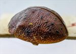
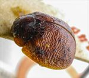
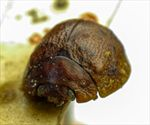
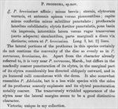

Click on images to enlarge
{kind=link}

Fig. 1. Paropsis prodroma type specimen, lateral view
{kind=link}

Fig. 2. Paropsis prodroma type specimen, dorsal view
{kind=link}

Fig. 3. Paropsis prodroma type specimen, anterior view
{kind=link}

Fig. 4. Paropsis prodroma, description
Name
Paropsis prodroma Blackburn, 1897
Corresponds to
Likely Ta65, but see Diagnosis and Notes below.
Diagnosis and Notes
Blackburn (1897) deals with P. prodroma as part of his 'subgroup iv' (i.e., those species without "strongly marked characters", whose greatest height is considerably in front of the middle of the elytral margin). Within that group, he characterises it as:
AA. Prothorax not (or scarcely) explanate at sides;
BB. The verrucae unpunctured or nearly so;
C. Elytra not having a sharply defined discal transverse wheal-like ridge;
DD. Subhumeral depression wanting;
E. Elytral interstices but little rugulose, at least not to the extent of obscuring the punctures and verrucae;
F. Elytra (at least on hinder part) studded with sharply defined isolated bead-like verrucae;
G. The elytral verrucae small;
H. The elytral puncturation fairly strong and not particularly close;
I. The postbasal impression of elytra not particularly strong and not at all defined behind;
JJ. The humeral calli small and pale ferruginous in colour;
KK. Form ovate (not nearly subcircular), marginal part of elytra but little out-turned.
This is very likely Ta65, a relatively common species in Victoria, with the dorsal morphology (including finely punctured scutellum), partially black venter, size, HCE/BL ratio and A-A/BL all being in the expected range for that species. The very similar but slightly darker Ta16 is also a possible candidate (though it is not recorded from Victoria), but it almost invariably has a dark humeral callus and scutellum, which are not present in the prodroma type. Another possible candidate species is the very similar Ta19. Compare also with T. verrucosa (Marsham).
Type specimen
Location: BMNH
Label data: /“Type” (red-bordered circle)/ “Blackburn coll. 1910-236”/ “Paropsis prodroma, Blackb.”/ “6246 T. V.”[on card with specimen]/
Male; Size (mm): 6.3 (L) x 5.1 (W) x 3.1 (H); A-A: 1.01 mm; HCE/BL ~ 22.5% (estimate from photo of lateral view).
Head and pronotum completely brown; elytra brown with some scattered, small and round verrucae, punctures large, interstices in places form transverse ridges; partially black ventrally.
Original description
Translation of original description (Figure 4) by ChatGPT, 04/2026:
♂. Allied to P. brevissima; less short; the sterna, the verrucae of the elytra, and the antennae toward the apex becoming pitchy; the head less densely and less finely punctulate; the sides of the prothorax somewhat dilated; the elytra strongly punctured, scarcely impressed behind the base, the interstices toward the sides simulating transverse wrinkles (in a certain aspect), the marginal portion scarcely distinct from the disc; otherwise as in P. brevissima. Length 3 lines [~6.4 mm], width 2⅖ lines [~5.1 mm].
References
Blackburn, T. 1897, "Revision of the genus Paropsis. Part II", Proceedings of the Linnean Society of New South Wales, vol. 22, 166-189 (page 174).
Copyright © 2026. All rights reserved.